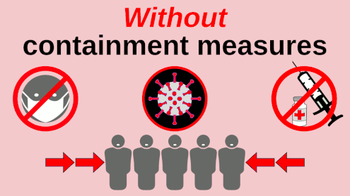

Coronavirus disease 2019 (COVID-19) is an infectious disease caused by severe acute respiratory syndrome coronavirus 2 (SARS-CoV-2).[9] It was first identified in December 2019 in Wuhan, Hubei, China, and has resulted in an ongoing pandemic.[10][11] The first confirmed case has been traced back to 17 November 2019 in Hubei.[12] As of 21 July 2020, more than 14.7 million cases have been reported across 188 countries and territories, resulting in more than 609,000 deaths. More than 8.29 million people have recovered.[8]
Common symptoms include fever, cough, fatigue, shortness of breath, and loss of smell and taste.[13][5][6][14] While the majority of cases result in mild symptoms, some progress to acute respiratory distress syndrome (ARDS) possibly precipitated by cytokine storm,[15] multi-organ failure, septic shock, and blood clots.[16][17][18] The time from exposure to onset of symptoms is typically around five days, but may range from two to fourteen days.[5][19]
The virus is primarily spread between people during close contact,[a] most often via small droplets produced by coughing,[b] sneezing, and talking.[6][20][22] The droplets usually fall to the ground or onto surfaces rather than travelling through air over long distances.[6][23] Transmission may also occur through smaller droplets that are able to stay suspended in the air for longer periods of time.[24] Less commonly, people may become infected by touching a contaminated surface and then touching their face.[6][20] It is most contagious during the first three days after the onset of symptoms, although spread is possible before symptoms appear, and from people who do not show symptoms.[6][20] The standard method of diagnosis is by real-time reverse transcription polymerase chain reaction (rRT-PCR) from a nasopharyngeal swab.[25] Chest CT imaging may also be helpful for diagnosis in individuals where there is a high suspicion of infection based on symptoms and risk factors; however, guidelines do not recommend using CT imaging for routine screening.[26][27]
Recommended measures to prevent infection include frequent hand washing, maintaining physical distance from others (especially from those with symptoms), quarantine (especially for those with symptoms), covering coughs, and keeping unwashed hands away from the face.[7][28][29] The use of cloth face coverings such as a scarf or a bandana has been recommended by health officials in public settings to minimise the risk of transmissions, with some authorities requiring their use.[30][31] Health officials also stated that medical-grade face masks, such as N95 masks, should only be used by healthcare workers, first responders, and those who directly care for infected individuals.[32][33]
There are no vaccines nor specific antiviral treatments for COVID-19.[6] Management involves the treatment of symptoms, supportive care, isolation, and experimental measures.[34] The World Health Organization (WHO) declared the COVID‑19 outbreak a public health emergency of international concern (PHEIC)[35][36] on 30 January 2020 and a pandemic on 11 March 2020.[11] Local transmission of the disease has occurred in most countries across all six WHO regions.[37]
Signs and symptoms
Fever is the most common symptom of COVID-19,[13] but is highly variable in severity and presentation, with some older, immunocompromised, or critically ill people not having fever at all.[39][40] In one study, only 44% of people had fever when they presented to the hospital, while 89% went on to develop fever at some point during their hospitalization.[41]
Other common symptoms include cough, loss of appetite, fatigue, shortness of breath, sputum production, and muscle and joint pains.[13][1][5][42] Symptoms such as nausea, vomiting, and diarrhoea have been observed in varying percentages.[43][44][45] Less common symptoms include sneezing, runny nose, sore throat, and skin lesions.[46] Some cases in China initially presented with only chest tightness and palpitations.[47] A decreased sense of smell or disturbances in taste may occur.[48][49] Loss of smell was a presenting symptom in 30% of confirmed cases in South Korea.[14][50]
As is common with infections, there is a delay between the moment a person is first infected and the time he or she develops symptoms. This is called the incubation period. The typical incubation period for COVID‑19 is five or six days, but it can range from one to fourteen days[6][51] with approximately ten percent of cases taking longer.[52][53][54]
An early key to the diagnosis is the tempo of the illness. Early symptoms may include a wide variety of symptoms but infrequently involves shortness of breath. Shortness of breath usually develops several days after initial symptoms. Shortness of breath that begins immediately along with fever and cough is more likely to be anxiety than COVID-19. The most critical days of illness tend to be those following the development of shortness of breath.[55] A minority of cases do not develop noticeable symptoms at any point in time.[56] These asymptomatic carriers tend not to get tested, and their role in transmission is not fully known.[57][58] Preliminary evidence suggested they may contribute to the spread of the disease.[59] In June 2020, a spokeswoman of WHO said that asymptomatic transmission appears to be "rare," but the evidence for the claim was not released.[60] The next day, WHO clarified that they had intended a narrow definition of "asymptomatic" that did not include pre-symptomatic or paucisymptomatic (weak symptoms) transmission and that up to 41% of transmission may be asymptomatic. Transmission without symptoms does occur.[56]
Prevention
A COVID-19 vaccine is not expected until 2021 at the earliest.[127] The US National Institutes of Health guidelines do not recommend any medication for prevention of COVID‑19, before or after exposure to the SARS-CoV-2 virus, outside the setting of a clinical trial.[128][129] Without a vaccine, other prophylactic measures, or effective treatments, a key part of managing COVID‑19 is trying to decrease and delay the epidemic peak, known as "flattening the curve".[123] This is done by slowing the infection rate to decrease the risk of health services being overwhelmed, allowing for better treatment of current cases, and delaying additional cases until effective treatments or a vaccine become available.[123][126]

Preventive measures to reduce the chances of infection include staying at home, wearing a mask in public, avoiding crowded places, keeping distance from others, washing hands with soap and water often and for at least 20 seconds, practising good respiratory hygiene, and avoiding touching the eyes, nose, or mouth with unwashed hands.[130][131][132][133]
The US Centers for Disease Control and Prevention (CDC) and the World Health Organization (WHO) recommend individuals wear non-medical face coverings in public settings where there is an increased risk of transmission and where social distancing measures are difficult to maintain.[134][30][135] This recommendation is meant to reduce the spread of the disease by asymptomatic and pre-symtomatic individuals and is complementary to established preventive measures such as social distancing.[30][136] Face coverings limit the volume and travel distance of expiratory droplets dispersed when talking, breathing, and coughing.[30][136] Many countries and local jurisdictions encourage or mandate the use of face masks or cloth face coverings by members of the public to limit the spread of the virus.[137][138][139][140]
Masks are also strongly recommended for those who may have been infected and those taking care of someone who may have the disease.[141] When not wearing a mask, the CDC recommends covering the mouth and nose with a tissue when coughing or sneezing and recommends using the inside of the elbow if no tissue is available.[131] Proper hand hygiene after any cough or sneeze is encouraged.[131]
Social distancing strategies aim to reduce contact of infected persons with large groups by closing schools and workplaces, restricting travel, and cancelling large public gatherings.[142] Distancing guidelines also include that people stay at least 6 feet (1.8 m) apart.[143] After the implementation of social distancing and stay-at-home orders, many regions have been able to sustain an effective transmission rate ("Rt") of less than one, meaning the disease is in remission in those areas.[144]
The CDC also recommends that individuals wash hands often with soap and water for at least 20 seconds, especially after going to the toilet or when hands are visibly dirty, before eating and after blowing one's nose, coughing or sneezing. The CDC further recommends using an alcohol-based hand sanitiser with at least 60% alcohol, but only when soap and water are not readily available.[131] For areas where commercial hand sanitisers are not readily available, the WHO provides two formulations for local production. In these formulations, the antimicrobial activity arises from ethanol or isopropanol. Hydrogen peroxide is used to help eliminate bacterial spores in the alcohol; it is "not an active substance for hand antisepsis". Glycerol is added as a humectant.[145]
Those diagnosed with COVID‑19 or who believe they may be infected are advised by the CDC to stay home except to get medical care, call ahead before visiting a healthcare provider, wear a face mask before entering the healthcare provider's office and when in any room or vehicle with another person, cover coughs and sneezes with a tissue, regularly wash hands with soap and water and avoid sharing personal household items.[32][146]
Sanitizing of frequently touched surfaces is also recommended or required by regulation for businesses and public facilities; the United States Environmental Protection Agency maintains a list of products expected to be effective.[147]
On 7 July 2020, the WHO said in a press conference that it will issue new guidelines about airborne transmission in settings with close contact and poor ventilation.[148]
For health care professionals who may come into contact with COVID-19 positive bodily fluids, using personal protective coverings on exposed body parts improves protection from the virus.[149] Breathable personal protective equipment improves user-satisfaction and may offer a similar level of protection from the virus.[149] In addition, adding tabs and other modifications to the protective equipment may reduce the risk of contamination during donning and doffing (putting on and taking off the equipment).[149] Implementing an evidence-based donning and doffing protocol such as a one-step glove and gown removal technique, giving oral instructions while donning and doffing, double gloving, and the use of glove disinfection may also improve protection for health care professionals.[149]